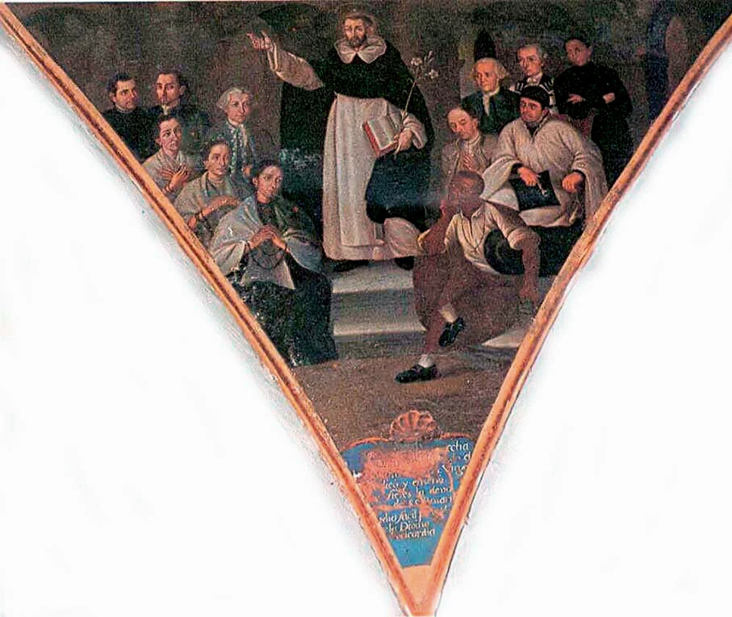
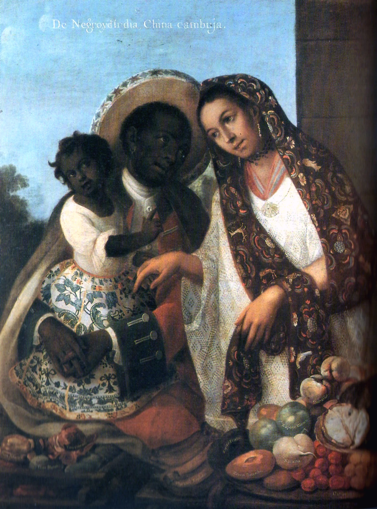
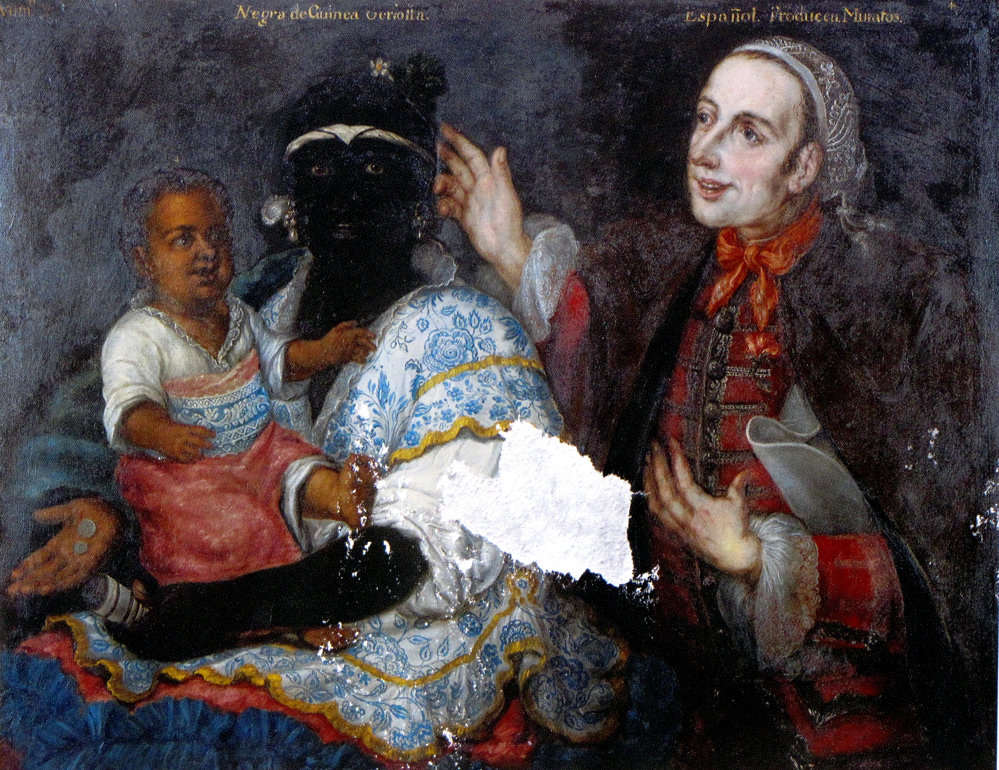
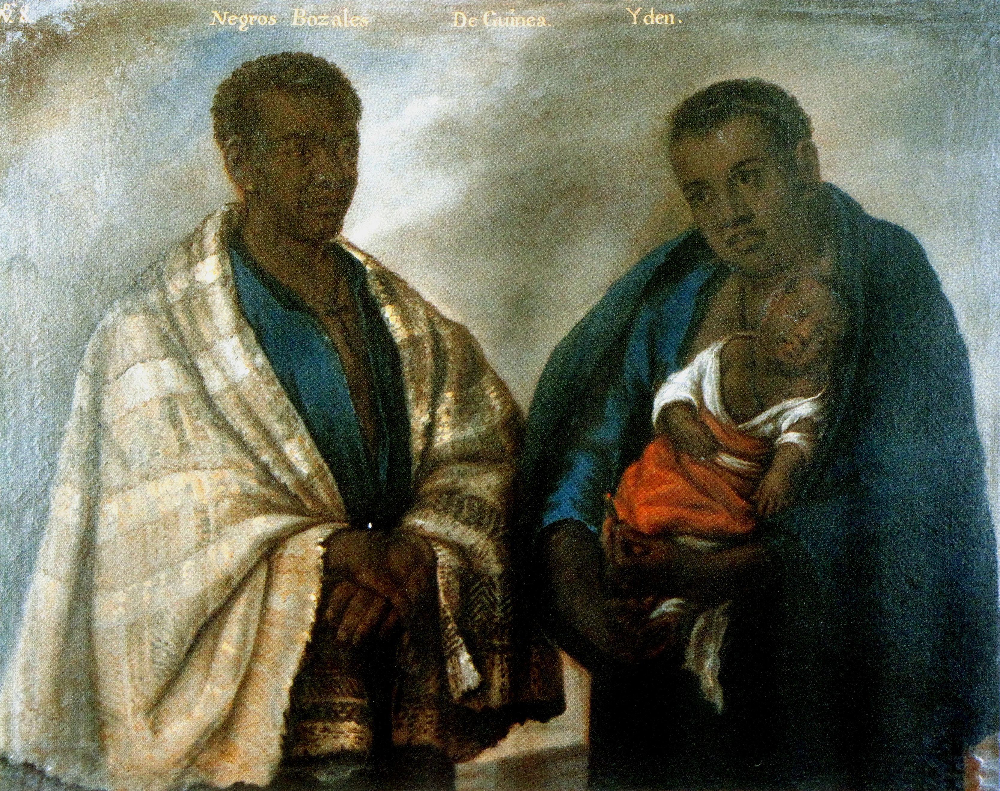

The colonial past is not behind glass; it lives in our skin, in our music, in how we see each other, and in how our societies are structured today.
Begin the tour
Religious Painting Hall
Step closer to this scene. In the heart of colonial society, where Afro-descendant people were classified and subordinated, the painter José Nicolás de la Escalera portrays Black figures with dignity, within the sacred space of family devotion.
During the colonial era, Afro-descendant people were brutally enslaved, yet here we see them in a space of majesty and faith.
It was one of the few permitted exceptions: dignity could appear on the canvas, even when it was denied outside of it.
Think about the present: who do we see today starring in our soap operas, leading companies, or on magazine covers? The struggle to be seen with dignity is a direct echo of these old visual restrictions.
Balthazar reminds us that the need to see ourselves represented with pride is not a modern demand: it is a historical claim more than three hundred years old.
Every time an Afro-descendant community demands to see its history told by its own voices, it is responding directly to what these paintings established as possible — or impossible — for centuries.

Secular Scenes
We leave the church and step into the street. Official history often reduces African populations to passive victims on the plantations. But these paintings tell another truth.
Look at the father's redingote: a coat of Anglo-Saxon origin. Its features — the adjustable double collar, the white buttons — reveal a survival of court fashion that had migrated into military uniforms.
Being a coachman in colonial Mexico City was a common urban occupation among free Afro-descendant people — a position of trust, not anonymity.
When you dance cumbia in Colombia, festejo in Peru, samba in Brazil, or son in Cuba today, you are dancing resistance. Joy and art were tools of survival.
Our Latin American identity is incomprehensible without the cultural, rhythmic, and culinary revolution that these people planted on our continent, against all odds.

Casta Painting
Stand in front of this painting. It looks like a catalog, doesn't it? That's exactly what it was meant to be. The Spanish Empire invented the "casta" system to classify people according to their racial mixture.
"Mulatto," "Zambo," "Morisco." They created a pyramid where the whiter your skin was, the more rights and status you had.
The pearl earrings, the gold details, the finely made huipil: the clothing in these paintings is not decoration — it is evidence of status. These people were neither invisible nor passive.
The legal casta system disappeared with independence, but colorism and structural racism remained.
When statistics show that skin tone still influences a person's economic opportunities, we are seeing the ghost of these paintings at work in the 21st century.
This is no coincidence. It was a system designed three hundred years ago to work exactly this way.

Portrait & Identity
We end our tour looking into the eyes of a figure with agency of his own. The history of Afro-descendant people is not only a history of submission.
It is a history of political intelligence, community, and an unbreakable pursuit of freedom. Palenques and quilombos were the first truly free territories in the Americas.
As you leave this museum today, remember: recognizing and celebrating our Afro-descendant roots is not an act of historical nostalgia.
It is an act of justice and a way of unlearning the colonial prejudices we still carry. We carry their legacy in our voice.
You have moved through four rooms, four artworks, four moments of encounter between colonial history and our society today. These paintings are mirrors. What you recognize in them is not just art: it is the invisible architecture of our present.